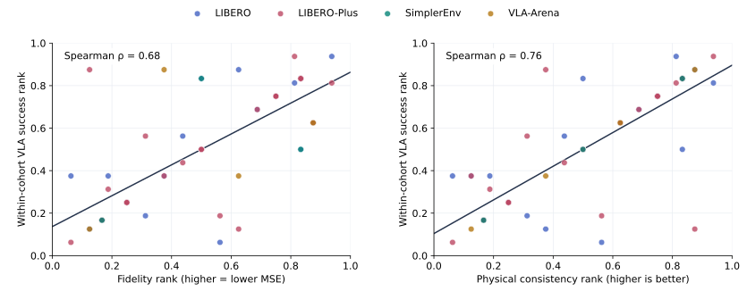

Zhongguancun AcademyZhongguancun Institute of Artificial Intelligence
ActionPieceRethinking Action Tokenization for
Autoregressive Vision-Language-Action Models
Abstract
Action reconstruction fidelity and physical consistency are both important for closed-loop robot control. Across 61 matched tokenizer–benchmark evaluations, both properties are associated with policy success, while neither alone fully explains the observed performance. ActionPiece achieves 94.80% on LIBERO, 68.77% on unseen LIBERO-Plus, 71.9% on SimplerEnv, and 51.45% mean success across VLA-Arena L0–L2. These results highlight the importance of considering fidelity and physical consistency together when evaluating action representations.
PhysBrain1.5 uses ActionPiece as its action tokenizer.
Fidelity and physical consistency
both matter.

LIBERO & LIBERO-Plus
Task performance and generalization to unseen evaluation conditions.
LIBERO-Plus
Overall success ↑LIBERO · success rate (%)
| Tokenizer | Spatial | Object | Goal | Long | Overall |
|---|---|---|---|---|---|
| ActionCodec | 93.40 | 99.00 | 95.40 | 89.80 | 94.40 |
| OAT | 85.60 | 96.20 | 87.20 | 75.20 | 86.05 |
| FASTerVQ* | 81.80 | 95.60 | 85.00 | 87.00 | 87.35 |
| ActionPiece | 96.20 | 99.00 | 93.40 | 90.60 | 94.80 |
LIBERO-Plus · success rate (%)
| Tokenizer | Camera | Robot | Language | Light | Background | Noise | Layout | Overall |
|---|---|---|---|---|---|---|---|---|
| ActionCodec | 33.27 | 38.84 | 80.81 | 88.44 | 90.15 | 58.03 | 75.87 | 64.23 |
| OAT | 32.21 | 47.81 | 79.51 | 82.84 | 82.71 | 46.41 | 67.41 | 60.67 |
| FASTerVQ* | 39.02 | 40.32 | 74.50 | 85.81 | 84.85 | 56.59 | 68.98 | 62.26 |
| ActionPiece | 45.09 | 49.61 | 82.24 | 91.94 | 91.36 | 57.59 | 77.97 | 68.77 |
Matched policy comparison. LIBERO-Plus demonstrations are excluded from policy training. FASTerVQ* denotes a reproduction of the published method.
SimplerEnv
WidowX task success in simulation.
71.9%ActionPiece · average success
Four manipulation tasks:
Put Spoon, Put Carrot, Stack Block, Put Eggplant.
| Model | Put Spoon | Put Carrot | Stack Block | Put Eggplant | Avg. |
|---|---|---|---|---|---|
| RT-1-X | 0.0 | 4.2 | 0.0 | 0.0 | 1.1 |
| Octo-Base | 0.0 | 12.5 | 15.8 | 41.7 | 17.5 |
| Octo-Small | 0.0 | 8.2 | 41.7 | 56.7 | 26.7 |
| OpenVLA-OFT | 34.2 | 30.0 | 30.0 | 72.5 | 41.8 |
| RoboVLM | 50.0 | 37.5 | 0.0 | 83.3 | 42.7 |
| Magma | 37.5 | 29.2 | 20.8 | 91.7 | 44.8 |
| CogACT | 71.7 | 50.8 | 15.0 | 67.5 | 51.3 |
| SpatialVLA | 20.8 | 20.8 | 25.0 | 70.8 | 34.4 |
| TraceVLA | 12.5 | 16.6 | 16.6 | 65.0 | 27.7 |
| VideoVLA | 75.0 | 20.8 | 45.8 | 70.8 | 53.1 |
| π₀ | 29.2 | 62.5 | 29.2 | 91.6 | 53.1 |
| π₀.₅ | 49.3 | 64.7 | 44.7 | 69.7 | 57.1 |
| Isaac-GR00T-N1.6-Bridge | 64.5 | 65.5 | 5.5 | 93.0 | 57.1 |
| LangForce | 89.6 | 63.8 | 33.3 | 79.2 | 66.5 |
| QwenGR00T + Qwen3-VL-4B | 87.5 | 50.0 | 29.2 | 54.2 | 55.2 |
| ActionPiece | 83.3 | 54.2 | 58.3 | 91.7 | 71.9 |
Success rates (%). Five independent 24-episode repeats per task.
VLA-Arena
Safety, distractors, extrapolation and long-horizon tasks across L0–L2.
Across all levels
Mean success ↑By difficulty
Success rate (%) ↑| Model | L0 | L1 | L2 |
|---|---|---|---|
| π₀.₅ | 64.27 | 35.64 | 24.55 |
| GR00T-N1.6 | 50.27 | 23.64 | 9.45 |
| Qwen3-VL-OFT | 72.00 | 19.64 | 8.55 |
| Qwen3-VL-GR00T | 76.91 | 23.45 | 12.55 |
| Qwen3-VL-PI | 64.00 | 25.27 | 12.91 |
| LingBot-VLA | 90.91 | 38.64 | 23.36 |
| Motus | 60.09 | 35.73 | 20.91 |
| ActionPiece | 82.18 | 42.73 | 29.45 |
Equal-weight mean over 11 task suites at each level; the overall score averages all 33 suite–level cells. Means are recalculated from the displayed success rates. LingBot-VLA and Motus use the updated comparison values.
Task-level success rates
Each cell lists L0 / L1 / L2 (%). Safety rows show task success, not cumulative cost.
| Task suite | π₀.₅ | GR00T-N1.6 | Qwen3-VL-OFT | Qwen3-VL-GR00T | Qwen3-VL-PI | LingBot-VLA | Motus | ActionPiece |
|---|---|---|---|---|---|---|---|---|
| Static Obstacles | 90 / 62 / 40 | 72 / 30 / 14 | 84 / 14 / 8 | 91 / 18 / 5 | 62 / 24 / 16 | 100 / 57 / 41 | 64 / 67 / 41 | 91 / 83 / 57 |
| Cautious Grasp | 50 / 14 / 0 | 16 / 2 / 0 | 86 / 4 / 0 | 77 / 8 / 2 | 80 / 20 / 0 | 92 / 32 / 1 | 62 / 25 / 11 | 77 / 18 / 1 |
| Hazard Avoidance | 58 / 30 / 36 | 64 / 4 / 10 | 50 / 12 / 4 | 67 / 15 / 19 | 54 / 16 / 14 | 86 / 3 / 26 | 65 / 34 / 21 | 68 / 22 / 46 |
| State Preservation | 58 / 56 / 54 | 66 / 50 / 38 | 90 / 40 / 30 | 86 / 56 / 47 | 78 / 50 / 52 | 97 / 80 / 64 | 63 / 63 / 72 | 94 / 80 / 64 |
| Dynamic Obstacles | 50 / 44 / 22 | 74 / 50 / 2 | 64 / 48 / 8 | 81 / 56 / 3 | 60 / 36 / 12 | 95 / 83 / 20 | 58 / 33 / 11 | 82 / 76 / 27 |
| Static Distractors | 88 / 16 / 16 | 46 / 32 / 6 | 82 / 6 / 2 | 91 / 6 / 2 | 80 / 14 / 2 | 99 / 21 / 26 | 69 / 19 / 13 | 92 / 21 / 22 |
| Dynamic Distractors | 80 / 66 / 54 | 70 / 72 / 18 | 82 / 48 / 20 | 92 / 49 / 25 | 90 / 56 / 30 | 100 / 79 / 43 | 77 / 51 / 26 | 90 / 63 / 43 |
| Preposition Combinations | 62 / 24 / 6 | 48 / 0 / 0 | 54 / 0 / 0 | 51 / 1 / 0 | 38 / 0 / 0 | 73 / 5 / 0 | 41 / 7 / 1 | 69 / 15 / 0 |
| Task Workflows | 38 / 20 / 22 | 42 / 0 / 0 | 42 / 20 / 16 | 51 / 3 / 9 | 46 / 2 / 10 | 67 / 3 / 20 | 38 / 25 / 14 | 64 / 33 / 21 |
| Unseen Objects | 48 / 60 / 20 | 26 / 18 / 16 | 60 / 24 / 6 | 63 / 46 / 26 | 40 / 60 / 6 | 91 / 60 / 16 | 63 / 65 / 19 | 78 / 59 / 43 |
| Long Horizon | 85 / 0 / 0 | 29 / 2 / 0 | 98 / 0 / 0 | 96 / 0 / 0 | 76 / 0 / 0 | 100 / 2 / 0 | 61 / 4 / 1 | 99 / 0 / 0 |